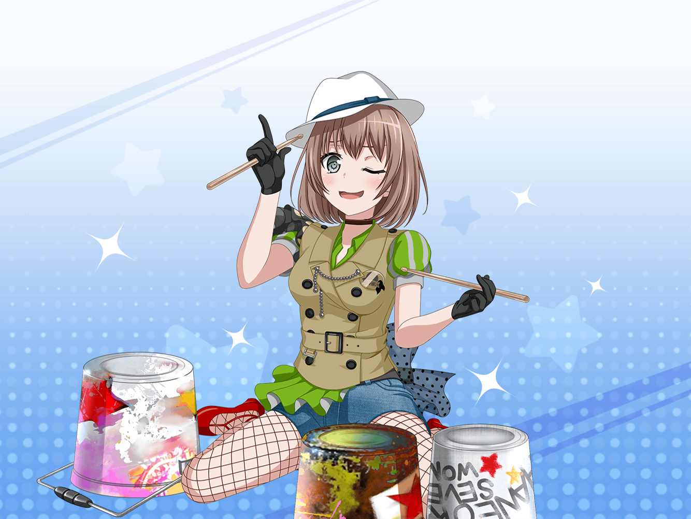

放課後
演劇部 部室
麻弥
わ、薫さん、見てください！
部室がすっかり整頓されてますよ
薫
ああ、掃除をしてくれた１年生の子猫ちゃん達に
あとでお礼を言っておかないといけないね
麻弥
薫さんにお礼を言われたら、
きっと１年生達大喜びすると思います！
麻弥
それにしても、キレイに整頓された部室って、
久しぶりに見た気がしますね！
薫
ああ。衣装も小道具もキレイに並んでいる。
見ているだけで、晴れ晴れとした気持ちになるよ
麻弥
順番がぐちゃぐちゃになってた台本も、
上演順に並べてくれたみたいです！
麻弥
こうしてみると、圧巻ですね。
この演劇部でいろんな舞台をやってきたのがわかります
麻弥
……あ、そうだ。
これを戻すのを忘れていました！
薫
ああ、私が幽霊役をやった舞台かい？
麻弥
はい。まさか薫さんの演技から、
あんな噂が生まれてしまうなんてびっくりでしたね
薫
私の演技はいつだって子猫ちゃん達の噂の的になってしまう……
つまり、そういうことさ
麻弥
ま、まあ確かに……
この舞台の本番でも薫さんの演技は評判でしたから
麻弥
まるで本物の幽霊のような演技で……
お客さんが舞台に釘付けになっていたのを覚えていますよ
麻弥
呪いの言葉をつぶやくシーンは、
ジブンもゾクっとするぐらい怖かったですし……
麻弥
無念さを嘆くところは本当に切なくて……
胸が痛くなりました
麻弥
でも、やっぱり……
井戸から出てくるシーンですよね！
あのインパクト、本当にすごかったですから！
薫
フフ、ありがとう。
あの時の子猫ちゃん達の悲鳴は忘れられないね
麻弥
まあ、あの時の悲鳴の半分は、
薫さんが出てきたことへの黄色い悲鳴だった気もしますけど……
麻弥
でも、本当にいい舞台でした。
もうすぐ夏も本番になって怪談にぴったりの季節になりますし、
またこの舞台をしてみてもいいかもしれませんね
薫
ああ、それはいいアイディアだ。
子猫ちゃん達にひと時の涼しさを届けてあげよう
薫
ただ……再演ということになると、
前回と全く同じ舞台では、退屈かもしれないな……
麻弥
そうですね。
前に来てくれた人が、また来てくれることもありますし
薫
やるからには前よりも華やかで儚いものにしたいね
麻弥
となると、演出を変えたりとかですかね……？
あ、美術や舞台装置を変えてみるのもいいかもしれません。
それだけで、前回とは違った印象になると思います
薫
さすが、麻弥だね。
実はやってみたいことがあるんだが、聞いてもらえるかい？
麻弥
はい、できる限りがんばりますので、言ってみてください！
薫
前回は幽霊が井戸から現れただろう？
そこを変えてみるのも面白いと思うんだ
薫
例えば、そう……空から登場してみるのはどうかな？
麻弥
えっ？ 空ですか？
そ、それはお客さんも意表を突かれると思いますけど……
薫
フフ、麻弥ならそう言ってくれると思ったよ
麻弥
いや、だって井戸の幽霊のお話ですから……
薫
それから、幽霊の数を増やしてみるのもいいかもしれない。
きっと驚きに満ちた舞台になるはずさ
麻弥
え、ええ、ものすごく驚くと思います……
どう考えても1人しか幽霊が出てこないお話ですし……
薫
ただ、まだ何か足りないような気がするね……
麻弥
ま、まだですか？
薫
あぁ……そうだ！
歌ってみるのはどうだろう？
麻弥
う、歌！？
薫
そう、ミュージカル形式にして、華やかに……
いや、それともオペラのほうが……
それなら子猫ちゃん達と歌うというのも……
麻弥
あ、あの薫さん……？
薫
音楽はハロハピのみんなに頼んでみよう。
幽霊の衣装を着て演奏をする……
ああ、これはもう世界が笑顔になる舞台になるはずさ！
麻弥
ちょ、ちょっと待ってください、薫さん！
なんかもう原型がなくなってますよー！